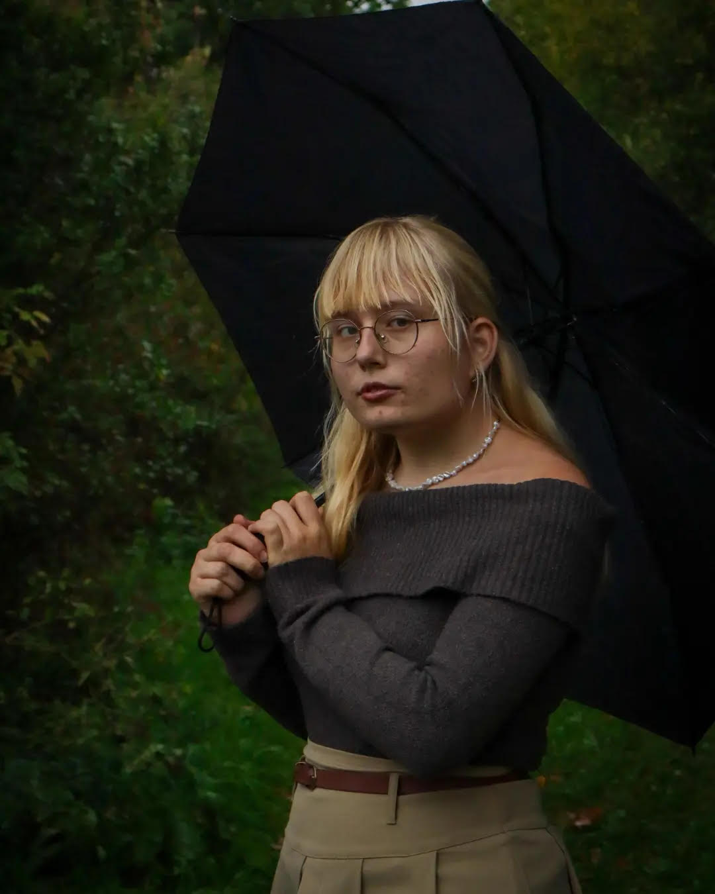
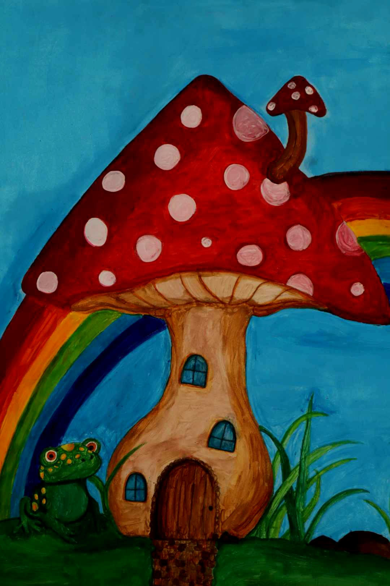
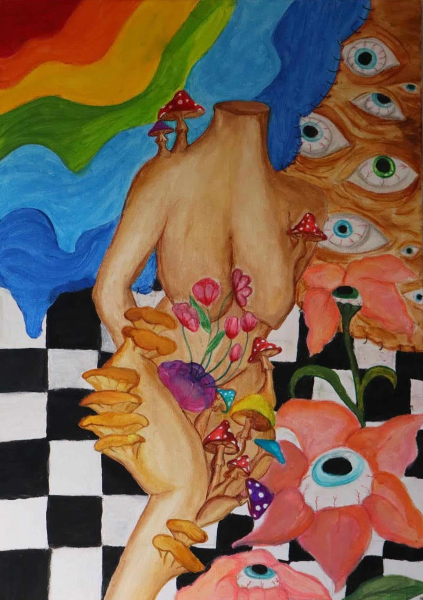
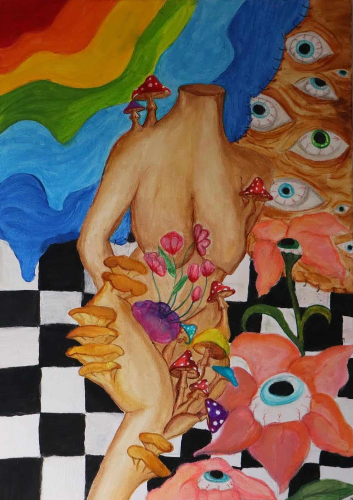
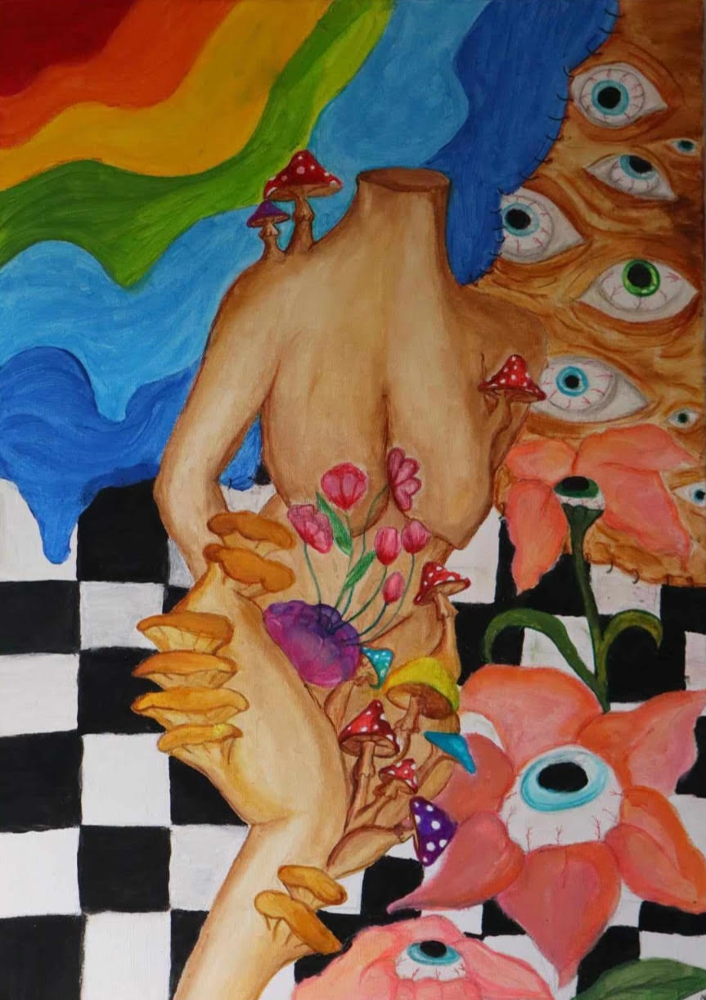

Natalia Rychlik – 18-letnia surrealistka z Ostrowa Wielkopolskiego. Zagubiona dusza w świecie natury. Jej twórczość jest zawieszona w onirycznych przestrzeniach. Możecie JĄ dziś podziwiać w Bibliotece Literatury Fantastycznej ANNOPOLIS im. Jerzego Grundkowskiego

 

